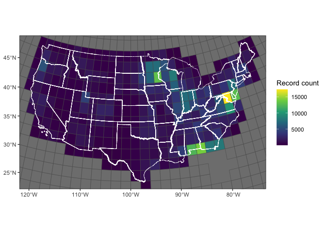

2 Download process
2.0.1 Catalogue existing data
The download process begins by cataloging the existing data that is available. We start out using the following parameters and parameter codes for retrieving data:
chlorophyll:
- “Chlorophyll”
- “Chlorophyll A”
- “Chlorophyll a”
- “Chlorophyll a (probe relative fluorescence)”
- “Chlorophyll a (probe)”
- “Chlorophyll a - Periphyton (attached)”
- “Chlorophyll a - Phytoplankton (suspended)”
- “Chlorophyll a, corrected for pheophytin”
- “Chlorophyll a, free of pheophytin”
- “Chlorophyll a, uncorrected for pheophytin”
- “Chlorophyll b”
- “Chlorophyll c”
- “Chlorophyll/Pheophytin ratio”
secchi:
- “Depth, Secchi disk depth”
- “Depth, Secchi disk depth (choice list)”
- “Secchi Reading Condition (choice list)”
- “Secchi depth”
- “Water transparency, Secchi disc”
doc:
- “Organic carbon”
- “Total carbon”
- “Hydrophilic fraction of organic carbon”
- “Non-purgeable Organic Carbon (NPOC)”
tss:
- “Total suspended solids”
- “Total Suspended Particulate Matter”
2.0.2 Maps of data spread within the contiguous US:
Maps are presented below with counts of records across a grid. The grid is how records are grouped in download requests to the Water Quality Portal. Florida is mapped separately because of its high concentration of values. Note: 1) the top four grid cells in the FL map are included in both maps, 2) the counts here are for raw data that are not filtered for simultaneous records.
Code
# Combine counts in each grid_id with the grid polygons
grid_counts <- left_join(x = global_grid,
y = site_counts %>%
count(grid_id),
by = c("id" = "grid_id")) %>%
st_transform(crs = 9311)
state_selection <- states(progress_bar = FALSE) %>%
filter(!NAME %in% c("Alaska", "Hawaii", "American Samoa",
"Guam", "Puerto Rico",
"United States Virgin Islands",
"Commonwealth of the Northern Mariana Islands")) %>%
st_transform(crs = 9311)## Retrieving data for the year 2020Code
non_fl_map <- ggplot() +
geom_sf(data = grid_counts %>%
filter(!id %in% c(#10847:10850,
10668, 10669, 10670, 10489, 10490,
10491, 10309, 10310)),
aes(fill = n)) +
geom_sf(data = state_selection %>%
filter(NAME != "Florida"), fill = NA, color = "white") +
# geom_sf_text(data = grid_counts, aes(label = id)) +
xlab(NULL) +
ylab(NULL) +
coord_sf(xlim = c(min(st_coordinates(state_selection)[,"X"]),
max(st_coordinates(state_selection)[,"X"])),
ylim = c(min(st_coordinates(state_selection)[,"Y"]),
max(st_coordinates(state_selection)[,"Y"]))) +
scale_fill_viridis_c("Record count") +
theme_bw()
non_fl_map
Code
fl_states <- state_selection %>%
filter(NAME %in% c("Florida", "Georgia", "Alabama"))
fl_map <- ggplot() +
geom_sf(data = grid_counts %>%
filter(id %in% c(10847:10850, 10668, 10669, 10670, 10489, 10490,
10491, 10309, 10310)),
aes(fill = n)) +
geom_sf(data = fl_states, fill = NA, color = "black") +
# geom_sf_label(data = grid_counts, aes(label = id)) +
xlab(NULL) +
ylab(NULL) +
coord_sf(xlim = c(min(st_coordinates(fl_states)[,"X"]),
max(st_coordinates(fl_states)[,"X"])),
ylim = c(min(st_coordinates(fl_states)[,"Y"]),
max(st_coordinates(fl_states)[,"Y"]))) +
scale_fill_viridis_c("Record count") +
theme_bw()
fl_map